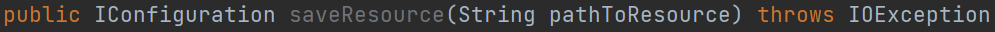
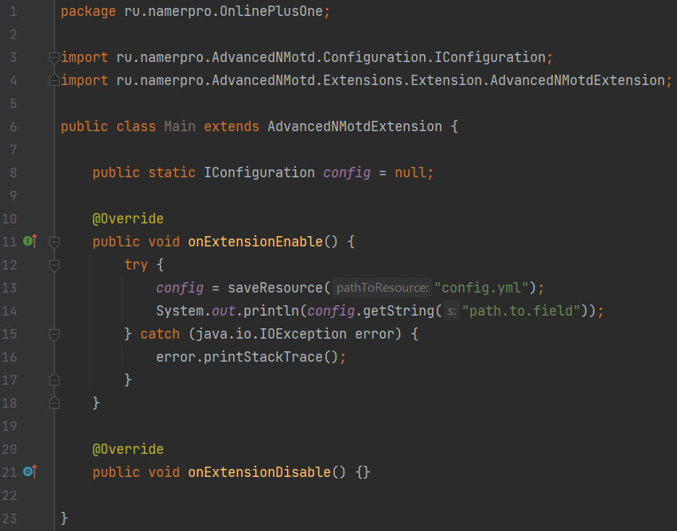
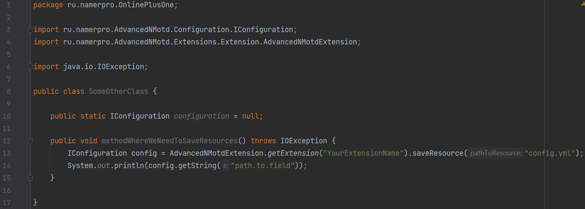

Class AdvancedNMotdExtension that you extend in your main extension class contains a method named saveResource which has signature:

You can use this method to create any resource file you want. It must not be only .yml file, but can also be of .png, .txt and any other type.
However, if you create .yml configuration file, method returns you IConfiguration object that can be used to get access to configuration fields. Otherwise, it returns null.
It should be mentioned that since you work with configuration via IConfiguration interface you should not bouther about server under which your extension is run (no need to care whether use org.bukkit.configuration.file.FileConfiguration for spigot servers or net.md_5.bungee.config.Configuration for bungee).
Configuration files will be created at AdvancedNMotd/extensions/YourExtensionName folder if not already exist there. For any existed .yml files you will get IConfiguration object of it.
Example:

To use this method in any class other than your main one, the simpliest way would be to do:
